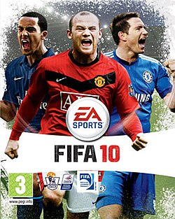
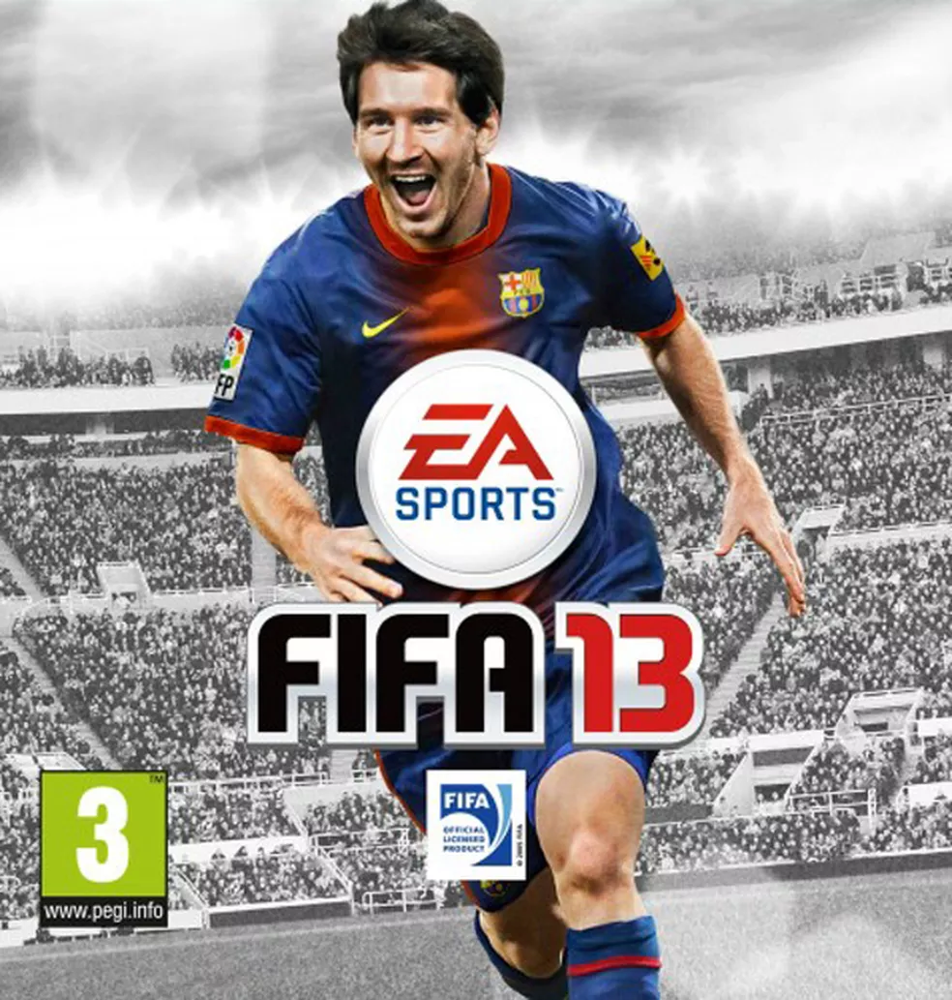
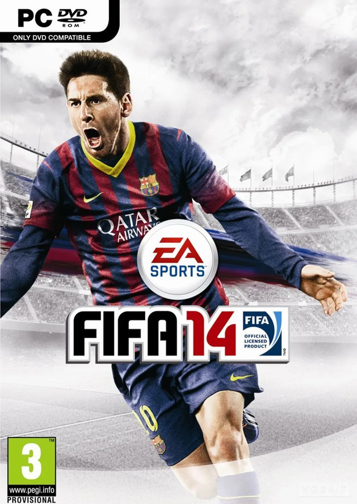
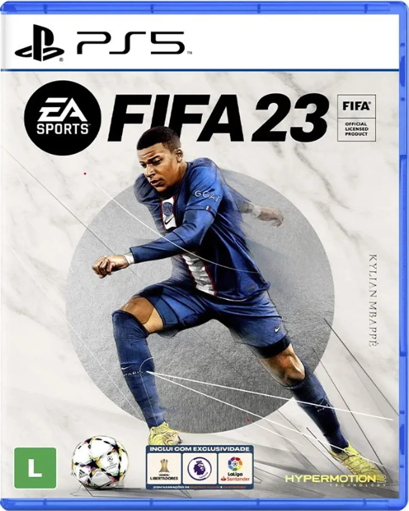
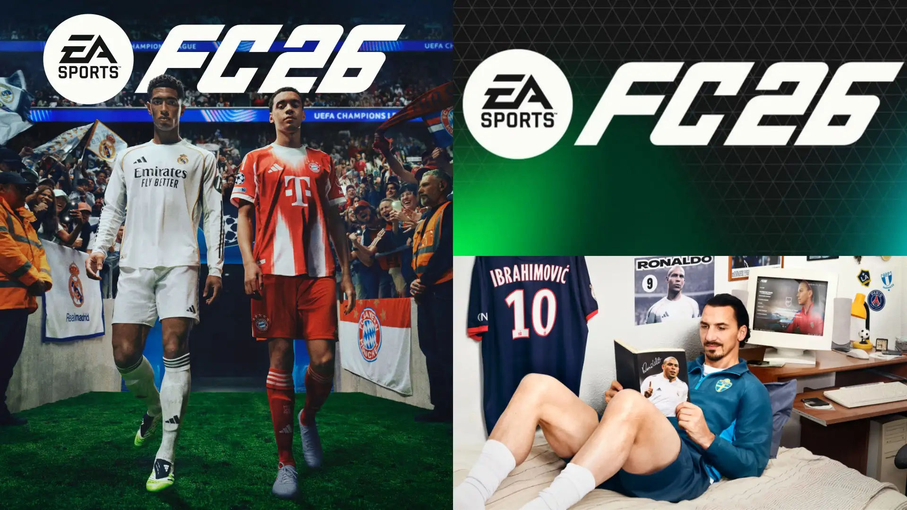

“Assegurar uma vida saudável e promover o bem-estar para todos, em todas as idades.”O futebol, tanto no mundo real quanto no digital, promove o bem-estar físico e mental.
O esporte estimula a socialização, o espírito de equipe e a superação pessoal. Mesmo o
FIFA, como jogo eletrônico, incentiva o interesse pelo esporte, o convívio social e o
equilíbrio emocional através do lazer e da competição saudável.
“Garantir educação inclusiva e equitativa de qualidade e promover oportunidades de
aprendizagem ao longo da vida para todos.”O FIFA pode ser visto como uma ferramenta educativa. Ele desenvolve raciocínio lógico,
estratégia, gestão de recursos, tomada de decisão e planejamento , competências
cognitivas importantes para o aprendizado. O projeto mostra como o jogo pode ser usado
de forma construtiva, unindo educação e entretenimento.
EA Sports.
It's in the game
Fifas que eu já joguei
FIFA 10 (2009)
- Desenvolvido pela EA Canada e publicado pela EA Sports.
- Lançado em Outubro de 2009.
- Introduziu o modo “Virtual Pro”, que permitia criar seu próprio jogador e evoluir por temporadas.
- Foi um dos primeiros Fifas que joguei com o Corinthians, e lembro até hoje da emoção de marcar gols com o Ronaldo Fenômeno no Timão!

FIFA 13 (2012)
- Messi se tornou o rosto oficial da franquia.
- Foi o primeiro FIFA que joguei de verdade, e onde aprendi os dribles e passes.
- O Corinthians vivia o auge — campeão da Libertadores e do Mundo!

FIFA 14 (2013)
- Primeiro FIFA com o motor gráfico Ignite.
- Movimentos mais realistas e física da bola melhorada.
- Comecei a jogar o modo “Carreira”, levando o Corinthians ao topo do mundo!

FIFA 17 (2016)
- Estreou o motor gráfico Frostbite.
- Introduziu o modo história “The Journey”, com Alex Hunter.
- Jogar modo carreira com o Corinthians e ver o estádio lotado era surreal!
FIFA 18 (2017)
- Cristiano Ronaldo foi o astro da capa.
- Melhorias gráficas incríveis com o Frostbite.
- Jogar com o Timão e ouvir o “Vai Corinthians!” era sensacional!
FIFA 22 (2021)
- Introduziu a tecnologia HyperMotion.
- Animações mais naturais e IA aprimorada.
- O Corinthians estava voltando com tudo!
FIFA 23 (2022)
- Último com o nome FIFA.
- Introduziu o HyperMotion2 e o crossplay.
- O Corinthians estava mais realista do que nunca!

EA Sports FC 25 (2024)
- Primeiro título totalmente independente.
- Novos modos e gameplay mais fluido.
- O Corinthians veio com os novos uniformes 24/25 — lindo demais!
EA Sports FC 26 (2025)
- Novas animações hiper-realistas e IA mais esperta.
- O Corinthians continua brilhando com o uniforme 25/26.
- É o FC mais real e emocionante de todos!

Minha história com o FIFA
Minha história com o FIFA começou quando eu tinha apenas 6 anos, lá no FIFA 13...
Hoje, posso dizer que o FIFA não é só um jogo — é parte da minha história e da minha paixão pelo Corinthians.
O Corinthians é uma das minhas maiores paixões. Tudo começou quando meu tio me levou ao estádio...
Acompanhar o Timão é viver emoções únicas — seja no campo ou no FIFA.


 “Assegurar uma vida saudável e promover o bem-estar para todos, em todas as idades.”
“Assegurar uma vida saudável e promover o bem-estar para todos, em todas as idades.”
 “Garantir educação inclusiva e equitativa de qualidade e promover oportunidades de
aprendizagem ao longo da vida para todos.”
“Garantir educação inclusiva e equitativa de qualidade e promover oportunidades de
aprendizagem ao longo da vida para todos.”